Books
Edited book
-
2025
Kinesiología Musculoesquelética: Experiencia, Tecnología e Innovación
Editorial Ígneo, 348 pp. ISBN 978-9564240527
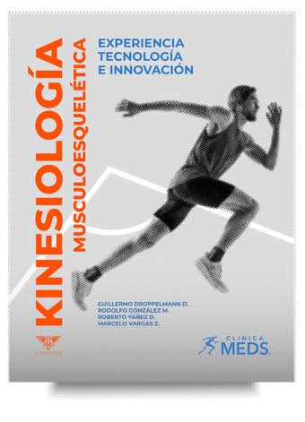
Book chapters
First pages are shown so readers can preview and cite each chapter.
-
2026
Diagnosis and Treatment Options for Musculoskeletal Injuries and Disorders
In: Handbook of Tissue Reconstruction and Regeneration. Springer Nature Reference [Accepted]

-
2025
Tendinopatía Lateral del Codo
In: Kinesiología Musculoesquelética: Experiencia, Tecnología e Innovación, 63–66. Editorial Ígneo
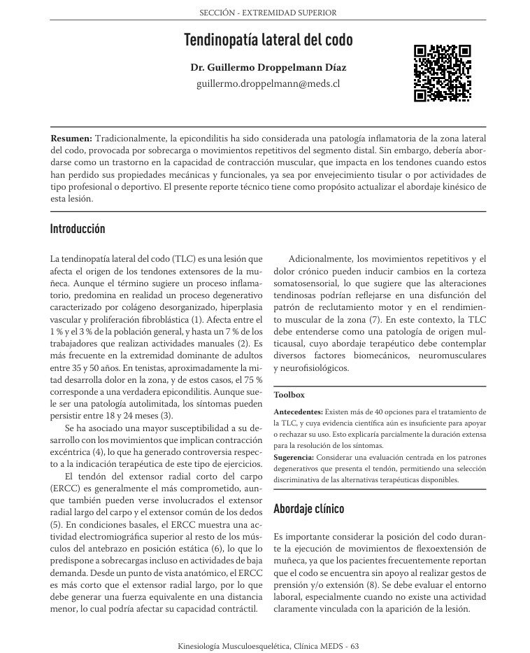
-
2025
Tendinopatía Medial del Codo
In: Kinesiología Musculoesquelética: Experiencia, Tecnología e Innovación, 67–71. Editorial Ígneo
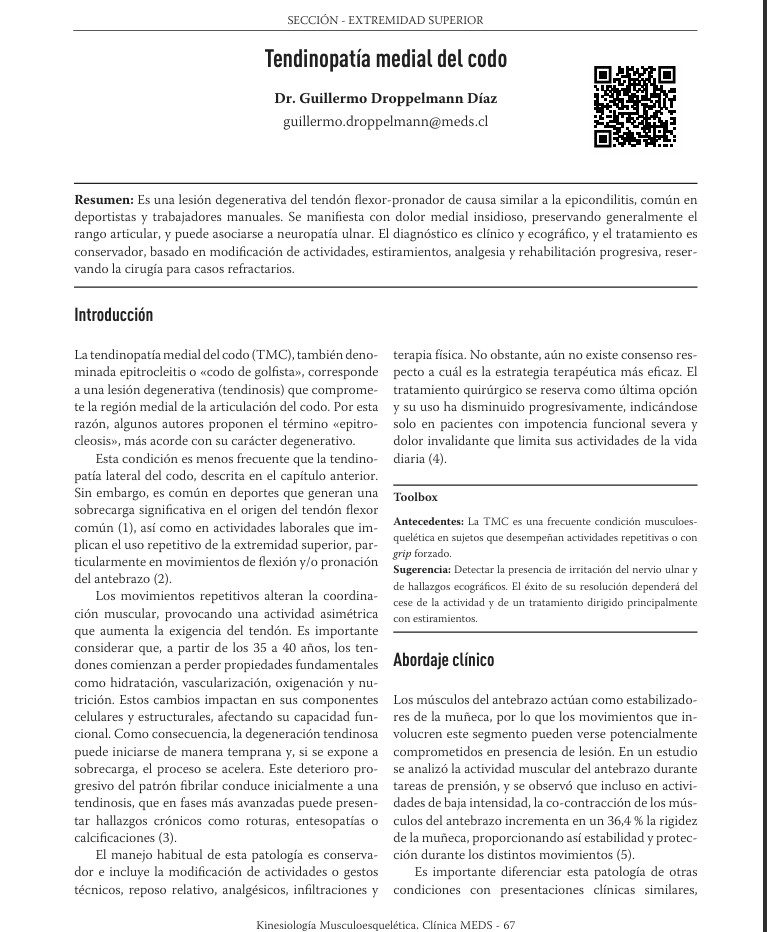
-
2025
Atrapamientos Neurales
In: Kinesiología Musculoesquelética: Experiencia, Tecnología e Innovación, 85–89. Editorial Ígneo
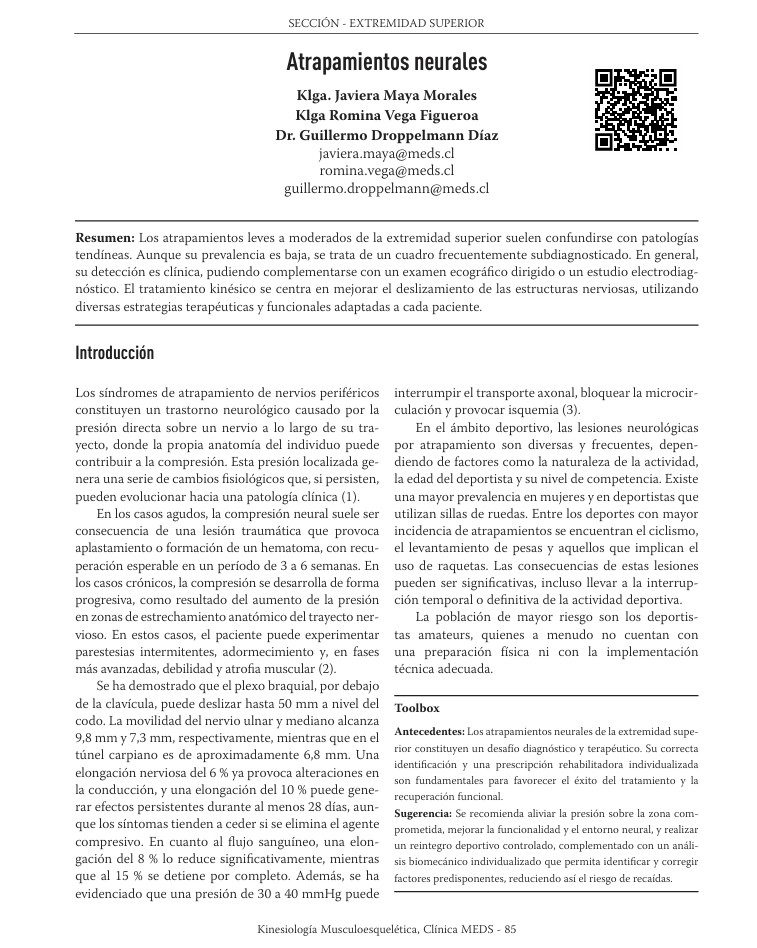
-
2025
Síndrome de Dolor Regional Complejo
In: Kinesiología Musculoesquelética: Experiencia, Tecnología e Innovación, 90–93. Editorial Ígneo
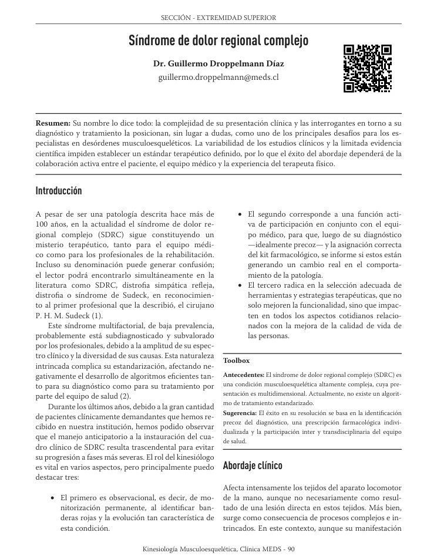
-
2025
Artrosis Trapeciometacarpiana
In: Kinesiología Musculoesquelética: Experiencia, Tecnología e Innovación, 99–102. Editorial Ígneo
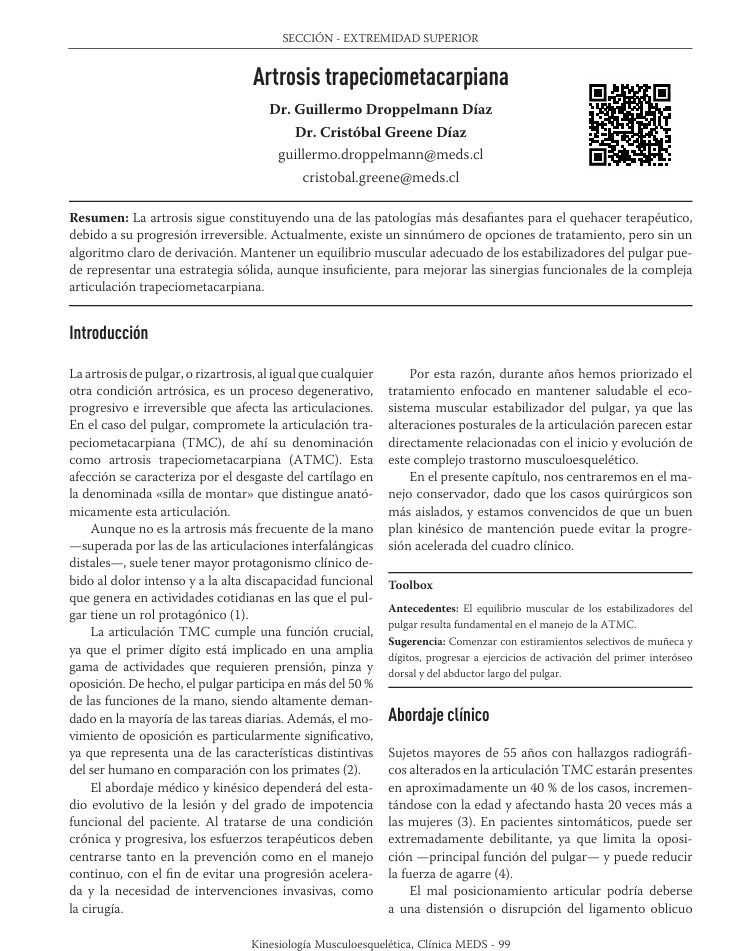
-
2025
Manguito Rotador Postquirúrgico
In: Kinesiología Musculoesquelética: Experiencia, Tecnología e Innovación, 116–120. Editorial Ígneo
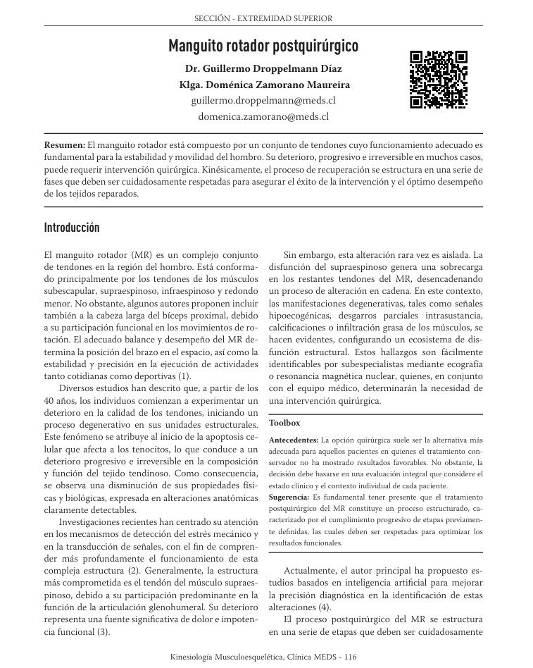
-
2025
Capsulitis Adhesiva de Hombro
In: Kinesiología Musculoesquelética: Experiencia, Tecnología e Innovación, 138–143. Editorial Ígneo
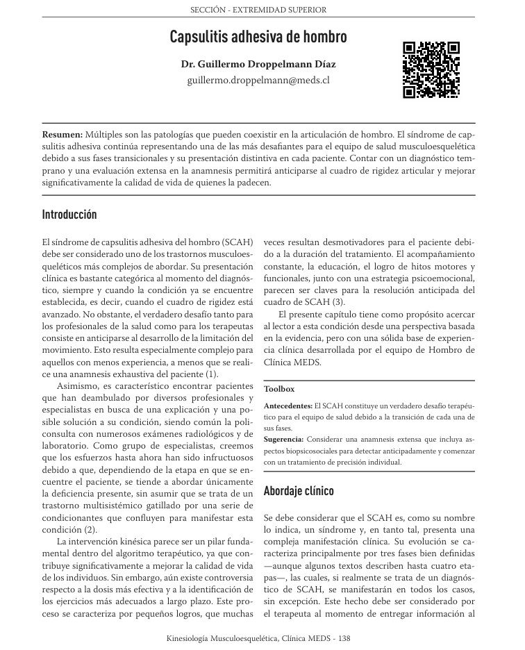
-
2025
Fuerza Prensil y Parámetros Neuromusculares
In: Kinesiología Musculoesquelética: Experiencia, Tecnología e Innovación, 291–294. Editorial Ígneo
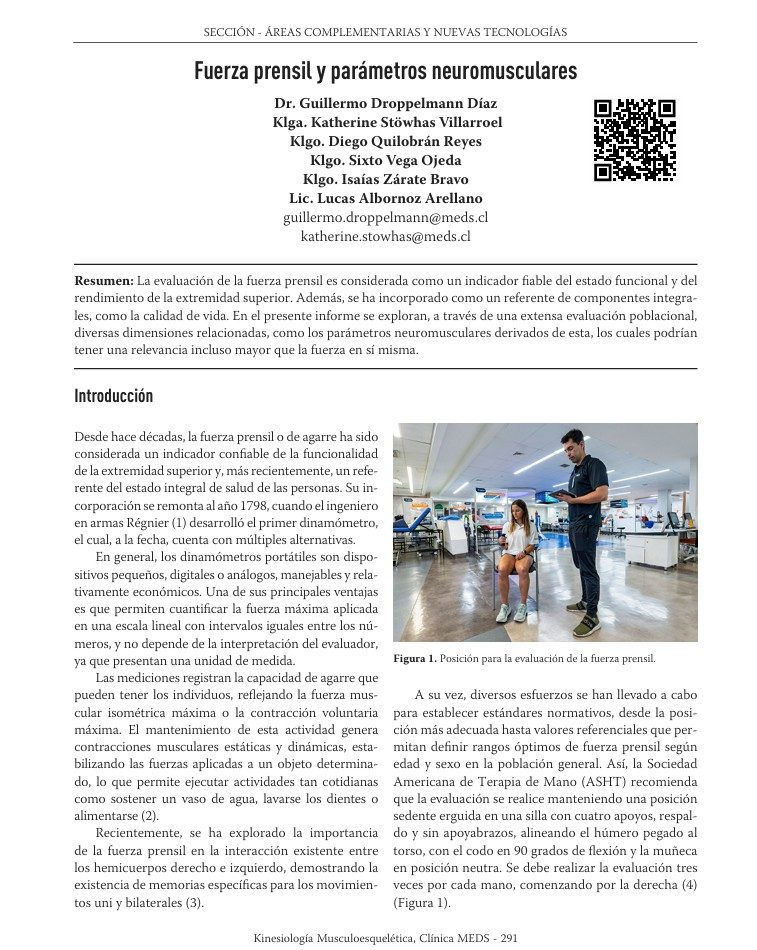
-
2025
Inteligencia Artificial y Desórdenes Musculoesqueléticos
In: Kinesiología Musculoesquelética: Experiencia, Tecnología e Innovación, 314–318. Editorial Ígneo
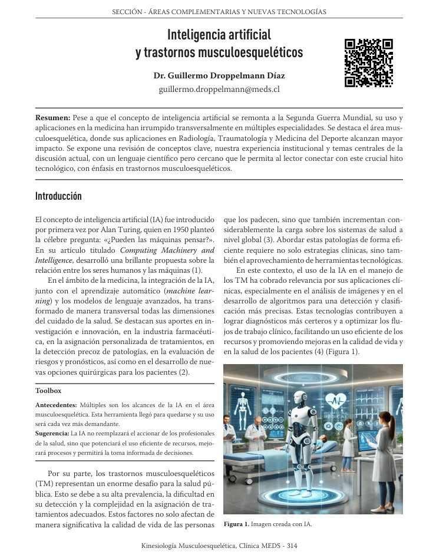
-
2022
Análisis Supervisado en Imágenes: Alcances Prácticos
In: Medicina y Ciencias Aplicadas al Fútbol, 840–849. Mediterráneo
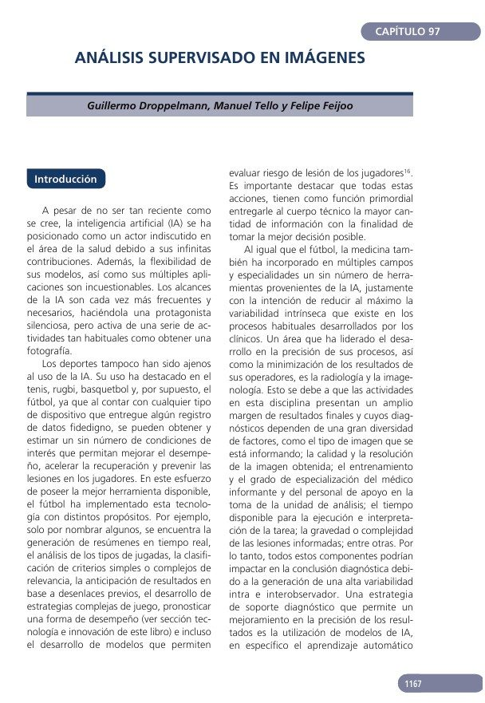
-
2021
-
2017
-
2017